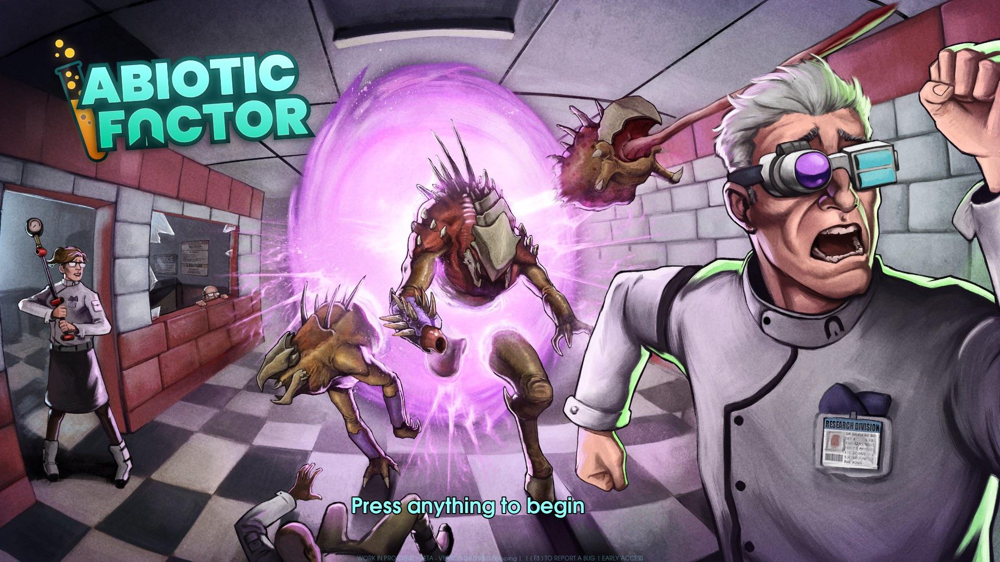

What is Abiotic Factor about?
What is the game genres?

Abiotic factor is a cooperative survival-crafting game where you play as an ordinary new hire scientist trapped inside a sprawling subterranean research facility after a folowwing catastrophic containment breach. You must scavenge any materials you can find with the facility from offices area to security department. You can play with 6 players or go solo to survive and find a way out.
What are the key features of the game?
The game have a unique setting and lore as it is based in a underground facility where you must survive breaches of aliens, anomalies and hostile military forces. The game have a deep survival needs which means that you need to handle with hunger, thirst, radiation, fatigue and even continence. There is a dynamic day-night cycle with the facility being normal at the day while in the night, there will be interdimensional portals that can appear, forcing you to protect your base.
Be Part of Our Community
There are community forums that you can join and communicate with other people who enjoy the game. These links will help find friends you can make to play the games with or anyone wanting to play together. You can also have discussion about the game and give each other helpful tips.
Here are the links:
Where can you can get the game?
The game can be bought by the links provided below.
I would personally recommend waiting for a discount if you don't have enough for the game.